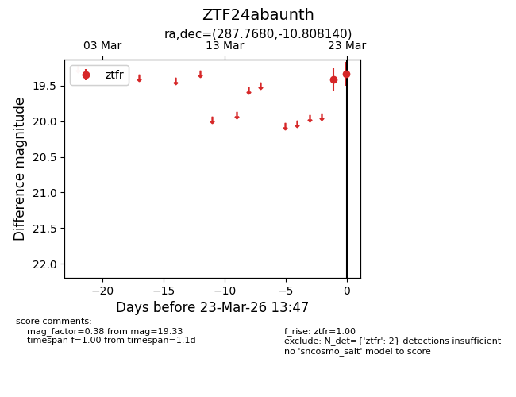
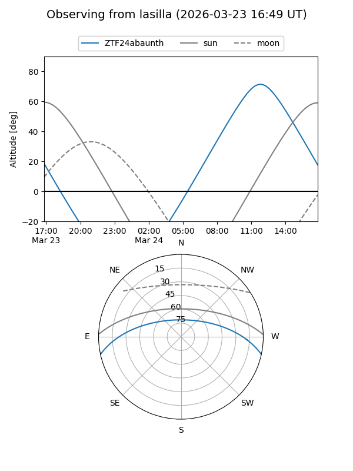
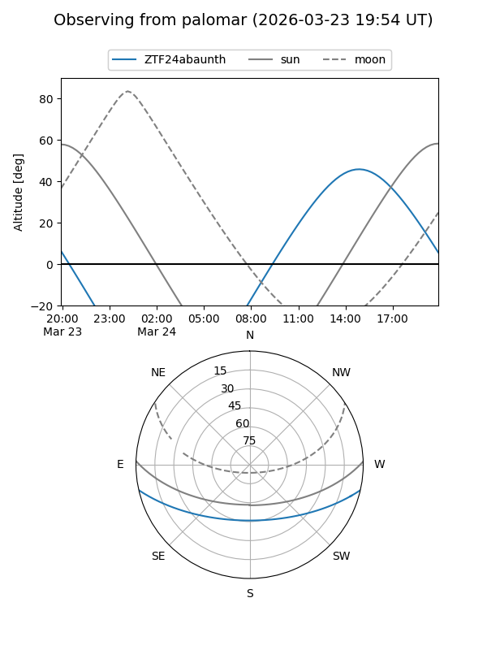

ZTF24abaunth
Target ZTF24abaunth at 2026-03-23 13:50
Aliases and brokers:
FINK: link
Lasair: link
ALeRCE: link
alt names
ZTF24abaunth (ztf,fink_ztf)
Coordinates:
equatorial (ra, dec) = 287.7680,-10.80814
equatorial (HMS+DMS) = 19:11:04.33,-10:48:29.30
galactic (l, b) = (25.4478,-9.22478)
Flags:
Photometry:
last ztfr=19.33
2 ztfr detections
Lightcurve

Visibility


Additional plots